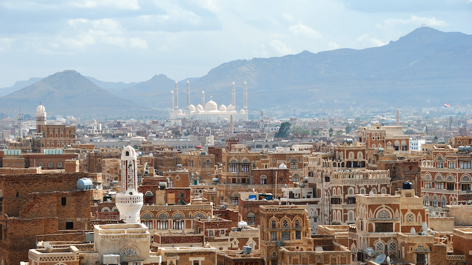
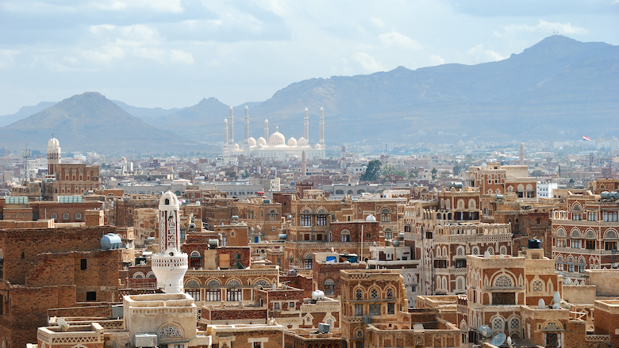

Hayl's web program
about this course
his course picks up where Harvard University’s CS50 leaves off, diving more deeply into the design and implementation of web apps with Python, JavaScript, and SQL using frameworks like Flask, Django, and Bootstrap. Topics include database design, scalability, security, and user experience. Through hands-on projects, students learn to write and use APIs, create interactive UIs, and leverage cloud services like GitHub and Heroku. By semester’s end, students emerge with knowledge and experience in principles, languages, and tools that empower them to design and deploy applications on the Internet.
My best TV show

Breaking Bad
released January 20, 2008
The original series, which ran from 2008 until 2013, followed Pinkman and his former chemistry teacher Walter White (Bryan Cranston) as they as they paired together to sell crystal meth. Over five seasons, they grew their meth business into an empire and had run-ins with local drug gangs and the cartel all while trying to stay one step ahead of the DEA.

money heist
released May 2, 2017
A documentary involving the producers and the cast premiered on Netflix the same day, titled Money Heist: The Phenomenon (Spanish: La casa de papel: El Fenómeno). The series was filmed in Madrid, Spain. Significant portions of part 3 and 4 were also filmed in Panama, Thailand and Italy (Florence).

Friends
released September 22, 1994
Pull up a couch and relax at Central Perk, where six Friends gather to talk about life and love. Friends tells the story of siblings Ross and Monica Geller, Chandler Bing, Phoebe Buffay, Joey Tribiani and Rachel Green.
about my mother land
Yemen
Sat 28 Nov 2016
Yemen, sometimes spelled Yaman, officially the Republic of Yemen, is a country at the southern end of the Arabian Peninsula in Western Asia. It is the second-largest Arab sovereign state in the peninsula, occupying 527,970 square kilometres. The coastline stretches for about 2,000 kilometres.
Capital: Sana'a
Population: 28.5 million (2018) World BankContinent: Asia
Points of interest: Stone house (Dar Alhajar), MORE
Official language: Arabic
 

cities viseted

New York
Fri 27 Nov 2016
New York City comprises 5 boroughs sitting where the Hudson River meets the Atlantic Ocean. At its core is Manhattan, a densely populated borough that’s among the world’s major commercial, financial and cultural centers. Its iconic sites include skyscrapers such as the Empire State Building and sprawling Central Park. Broadway theater is staged in neon-lit Times Square..

Paris
Sat 28 Nov 2016
Paris, France's capital, is a major European city and a global center for art, fashion, gastronomy and culture. Its 19th-century cityscape is crisscrossed by wide boulevards and the River Seine. Beyond such landmarks as the Eiffel Tower and the 12th-century, Gothic Notre-Dame cathedral, the city is known for its cafe culture and designer boutiques along the Rue du Faubourg Saint-Honoré..

San Francisco
Sun 29 Nov 2016
San Francisco, officially the City and County of San Francisco and colloquially known as SF, San Fran, Frisco, or The City, is the cultural, commercial, and financial center of Northern California.
The Button
this is the end
Thank you for looking to my web program.
I hope you like it